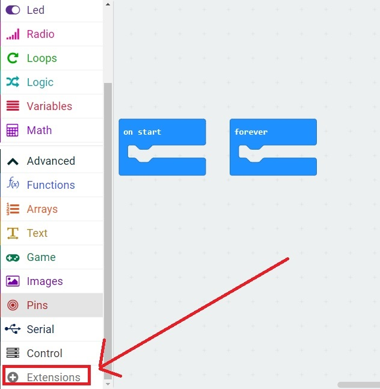
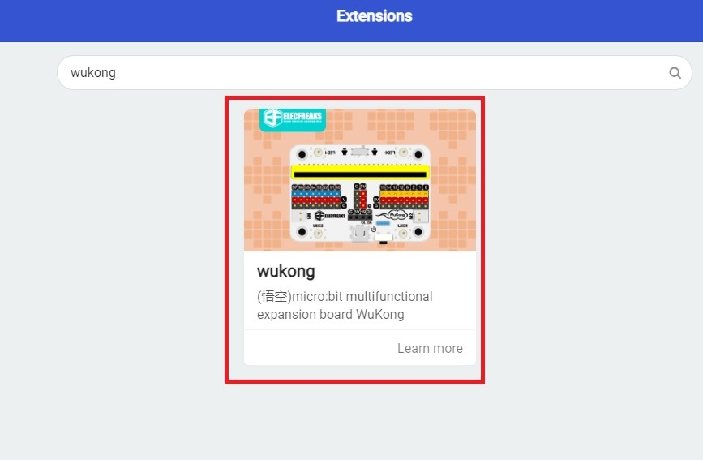

Wukong Breakout Board
The wukong breakout board provides power and allows the micro-bit controller to control the motors

It is discussed here: wiki
We will be writing code to interface with this board. But first you need to load the extension.
To load the extension in micro-bit IDE, Open and Advanced, and click Extensions:

Then in the search box enter this name: wukong
